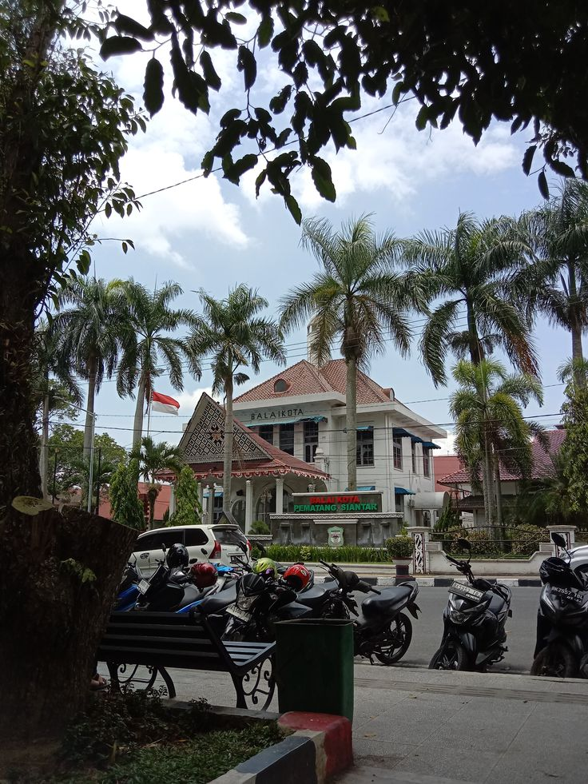
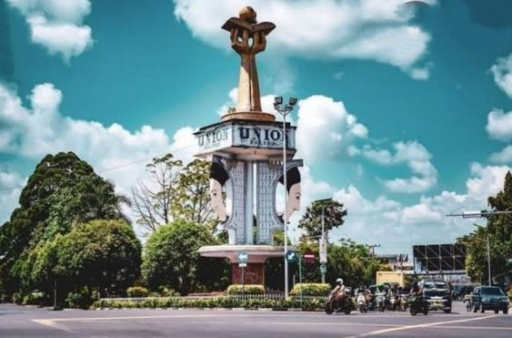
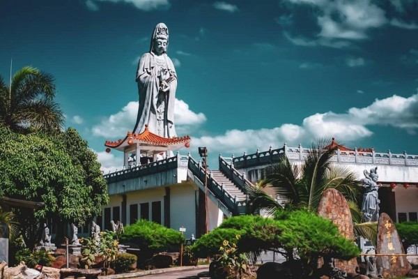
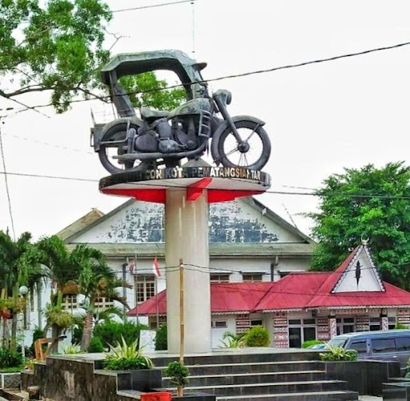

Sejarah

Masa Kerajaan Siantar Sebelum Proklamasi Kemerdekaan Republik
Indonesia, Pematangsiantar merupakan wilayah dan pusat pemerintahan
dari Kerajaan Siantar, yaitu satu dari tujuh kerajaan yang ada di
Simalungun. Kerajaan Siantar yang berkedudukan di Pulau Holing dan
raja terakhir dari dinasti ini adalah keturunan marga Damanik yaitu
Tuan Sang Naualuh Damanik.[butuh rujukan] Ia mulai memerintah
sebagai raja di Kerajaan Siantar sejak tahun 1889 hingga tahun
1904.[6]
Di sekitar Pulau Holing kemudian berkembang menjadi perkampungan
tempat tinggal penduduk diantaranya Kampung Suhi Huluan, Siantar
Bayu, Suhi Kahean, Pantoan, Suhi Bah Bosar, dan Tomuan.
Daerah-daerah tersebut kemudian menjadi daerah hukum Kota
Pematangsiantar yaitu: Pulau Holing menjadi Kampung Pematang Siantar
Bayu menjadi Kampung Pusat Kota Suhi Kahean menjadi Kampung
Sipinggol-pinggol, Kampung Melayu, Martoba, Sukadame, dan Bane. Suhi
Bah Bosar menjadi Kampung Kristen, Karo, Tomuan, Pantoan, Toba dan
Martimbang.
Geografis

Kota Pematangsiantar terletak pada garis 2° 53’ 20”–3° 01’ 00”
Lintang Utara dan 99° 1’00”–99° 6’ 35” Bujur Timur, dan merupakan
enklave wilayah Kabupaten Simalungun.
Kota Pematangsiantar berupa daratan seluas 79,971 km2 yang berada
pada ketinggian antara 400-500 meter di atas permukaan laut.[7]
Berdasarkan luas wilayah menurut kecamatan, kecamatan yang terluas
adalah kecamatan Siantar Sitalasari dengan luas wilayah 22,723 km²
atau sama dengan 28,41% dari total luas wilayah Kota
Pematangsiantar.
Wisata
Saat sedang berlibur di Sumatera Utara, tak ada salahnya jika Anda
juga mengunjungi vihara terbesar se-Asia Tenggara. Vihara
Avalokitesvara adalah nama destinasi wisata ini. Tempat
persembahyangan bagi umat Buddha ini sangat terkenal sebagai obyek
wisata religi. Pasalnya, Anda akan menemukan sebuah Patung Dewi Kwan
Im raksasa yang berdiri menjulang tinggi dengan megah.
Pihara Siantar

Bangunan ini padat dengan patung-patung kepercayaan umat Buddha
yang kabarnya memberikan keselamatan. Selain menyandang sebagai
vihara terbesar di Asia Tenggara, patung Dewi Welas Asih pernah
lolos dalam daftar rekor Muri sebagai Patung Dewi Kwan Im
tertinggi di Indonesia.
Bsa Siantar

sebagai ikon kota pematang siantar, tugu ini memang layak
dikunjungi. berbeda dengan becak di kota lainnya, becak di kota
ini memang berbeda karena menggunakan sepeda motor tua dan
pengemudi berada di samping penumpang. tugu becak ini cukup tinggi
sehingga dapat dijadikan objek foto yang indah dan akan terlihat
bagus pada malam hari